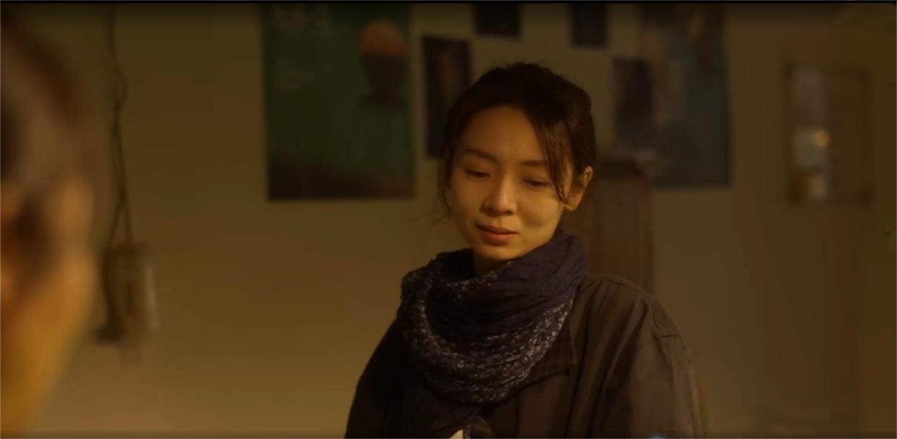
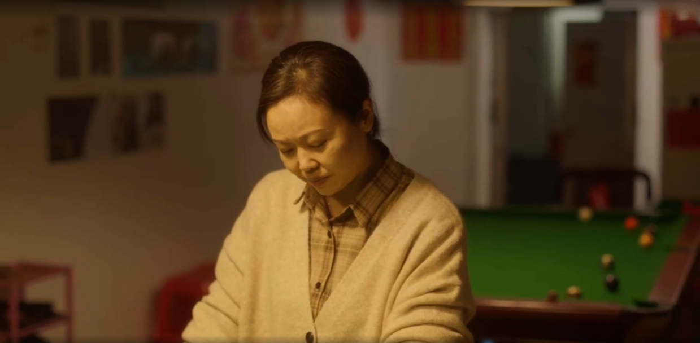
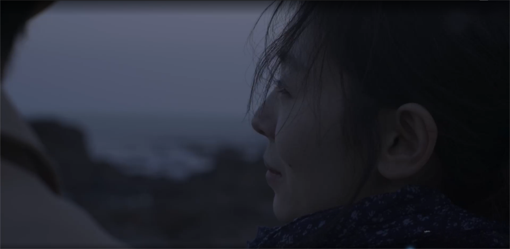
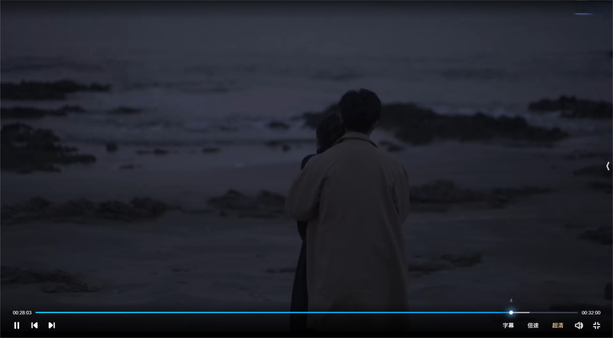

《海平线的告别》
关键词：家庭、女性、疾病叙事
一句话故事：
身患遗传性不治之症的王蔷，在母亲病危时得知生父尚在人世，便在男友陪伴下踏上寻父之旅，探寻身世真相的过程里，她了解到上一辈人各自的苦衷与抉择，最终放下对完整家庭的执念，坦然接纳残酷命运，回到母亲身边与过往和解。
一、成片静帧




作品展示：
通过网盘分享的文件：海平线的告别.mov
链接: https://pan.baidu.com/s/1fT_elkNu3_nUn-SzL84Atw?pwd=egjt 提取码: egjt
故事梗概
王蔷是一位身患遗传性神经疾病的年轻女性，在母亲谢绮丽病危之际，从母亲含糊的话语中得知一个被隐藏数十年的秘密——她的父亲王树华并没有死。带着自己也将不久于人世的绝望与对身世真相的执念，王蔷在男友李皓的陪伴下，踏上了前往广东台山的寻父之旅。
根据母亲珍藏的老照片和旧信封上的地址，他们找到了王树华的老家，却遭遇奶奶和爷爷的激烈拒绝。在王蔷坦诚自己遗传了母亲的疾病、时日无多后，爷爷动摇了，给出了父亲现在的地址。在父亲经营的小台球馆里，王蔷遇到了父亲现任妻子——一位戴着与母亲同款戒指的中年女人。从她口中，王蔷听到了故事的另一个版本：当年是母亲谢绮丽在婚前突然消失，主动抛弃了父亲，而非父亲抛弃了她们。父亲曾痛苦地寻找，后来才重建了生活。
真相的颠覆性让王蔷陷入更深的困惑与痛苦。她开始理解每个人在命运面前的自私与无奈——母亲的离开是为了不拖累爱人，父亲的沉默是创伤后的逃避，而自己正面临与母亲相似的选择。最终，王蔷没有与父亲相见，她选择接受命运，在男友的陪伴下回到母亲身边。海边，那个反复出现在她幻觉中的拥抱场景真实上演——李皓从身后抱住她，承诺不离不弃。王蔷扔掉母亲留下的戒指，在晨光中醒来，床头是那张海平线的照片，周围散落着药瓶。
故事以一个循环的梦境结构结束：王蔷依然活着，依然在抗争，但她对“完整的家”的执念已经释然。
创作阐述
《海平线上的告别》是一个关于告别、寻找与和解的故事，它试图探讨的是当一个人同时面对母亲的离去、自身有限的时间以及一个被悬置多年的身世之谜时，如何在这些无法回头的选择中找到属于自己的平静。故事的核心并不在于真相本身，而在于王蔷在追寻真相的过程中，逐渐理解每个人都有自己的苦衷与无奈，最终她必须学会与这些无法改变的事实共存，并为自己做出最后的决定。
从结构上看，剧本采用了层层递进的解谜式叙事。王蔷从母亲临终前那句关于生父的信息出发，踏上了一条她从未想象过的旅程。这条旅程表面上是寻找一个叫王树华的男人，但实质上是一次对自我身份的探寻。剧本前半部分——从医院到母亲卧室翻找月饼盒，再到驱车前往陌生的老街巷——营造出一种略带悬疑感的氛围，观众和王蔷一样，对这个缺席多年的父亲充满了疑问：他为什么离开？他是否知道她们母女的存在？他如今过着怎样的生活？这些疑问驱动着叙事向前，也让王蔷这个人物在行动中逐渐丰满起来。
关于时间与空间的特殊处理，剧本中有两个值得注意的设计。其一是王蔷在车上惊醒的段落——她在前往父亲住址的途中要求停车，因为她“记得这里”，随即用手机拍下的照片与床头柜上的大海风景图一模一样。这里暗示了某种超越现实逻辑的联系，仿佛是过去的某个时刻（或未来的某个时刻）在向现在的她传递信号。这种处理方式并没有走向超现实主义的极端，而是以一种若有若无的方式，让观众感受到王蔷与这片海之间的命运纠缠。其二是那个反复出现的“海边拥抱”场景——它既像是王蔷的幻想，又像是她的预感，甚至在剧本的最后，它成为了她真实经历的时刻。这种模糊性与剧本的主题高度契合：当你不知道未来会怎样时，你能做的只有相信自己的感受。
4.完整剧本
《海平线上的告别》
场景一 海边 傍晚 外
海浪击打着海岸线，溅出很大的水花，留下一串白色的泡沫溶解，再反复。
王蔷站在海边的沙滩上，面朝大海，眼眶蓄满泪水。
一个男人从她身后环抱住她，手臂绕过王蔷的肩颈，王蔷轻轻抓住男人的手臂。
王蔷
(轻轻地说）
如果，明天我就要死了——
王蔷说完后缓缓闭上了眼睛。
场景二 王蔷家 日 内
王蔷猛地睁开眼，从床上惊醒，天刚蒙蒙亮。
王蔷坐起来，缓了半天，一阵手机的振动声响起，王蔷拿起手机，走出房间。
床头柜上有一个相框，相框里的照片是一张海滨风景图。
出片名《海平线上的告别》
场景三 医院走廊 日 内
王蔷一瘸一拐走在医院住院部的走廊上。
场景四 病房 日 内
王蔷进入病房，走到病床旁边，映入眼帘的是躺在病床上非常虚弱的母亲。
李皓站起来让王蔷坐下，王蔷握住母亲的手。
王蔷
妈。
母亲躺在床上，断断续续地发出呻吟。
李皓
从早上开始就一直这样。
王蔷
妈？
王蔷轻轻晃了晃母亲，顺着王蔷的晃动，母亲睁开眼，一看到王蔷情绪更激动了，缓慢地把手抬到了肚子上，左手的手指头一直在勾，一直哼唧着什么。
王蔷
是不是手又麻了。
王蔷拉过母亲的手，揉起来。
王蔷
你去装个热水袋。
李皓点头出去。
母亲依旧哼唧，费力地给自己戴着戒指的无名指打弯。
王蔷
是要把戒指摘下来吗？
母亲一下子就安静了。
王蔷摘下戒指，母亲头扭向她嘴巴一张一合，王蔷把头靠近母亲。
母亲在她的耳边轻轻说了几句，王蔷立马皱起眉毛，神色震惊。
场景五 医生办公室 日 内
王蔷走进办公室，坐到医生桌前。
医生
一直说话吗？（叹气）她现在的情况挺差的，你得做好心理准备。
王蔷
还有什么办法吗？
医生摇了摇头。
王蔷佝偻着腰坐在椅子上，形单影只。
医生
还有一件事，我要跟你说一下。
场景六 医院花园 日 外
王蔷一个人靠在医院花园的长椅上，看到正对面一对中年夫妻，中年女人瘫坐在轮椅上戴着毛线帽目光呆滞。中年男人木然地推着女人往阳光处走。
王蔷看着中年男人和女人，手里面摩擦着戒指。
李皓突然出现在王蔷身边。
李皓
给你打电话也不接。
王蔷没有回应，李皓坐到王蔷身边。
李皓
医生怎么说？
王蔷依然在发呆。李皓叹口气，用手揽过王蔷的肩膀。
李皓
我请了假，这段时间陪你一起照顾阿姨。钱的事你不用管，我这有，后面我们…
王蔷
我爸没死。
李皓
啊？
王蔷
我爸没死，我妈刚才说的。
王蔷抬起头，认真坚决地说。
王蔷
我要去找他。
场景七 母亲卧室 夜 内
晚上，李皓和王蔷打开母亲卧室房间的灯，走进屋内。
王蔷从衣柜下的小抽屉里拿出了一个生了锈的月饼盒。
王蔷
我妈所有重要的东西都在这儿。
两人坐在书桌前，王蔷把月饼盒打开，打开后最上面放的是一块手表。
王蔷拿出来晃了晃，表盘上针走得不准了，停住了。
王蔷
这是我工作第一个月给妈买的。
王蔷继续往下翻是户口本和房产证等票据，王蔷在翻到一幅画的时候愣了一下，上面画着一家三口，爸爸妈妈牵着女儿在草坪上，爸爸没有画脸。李皓注意到王蔷，拿过那幅画看了一眼。
王蔷叹口气，继续往下翻，在最底部抽出了一封旧信封，从信封中抽出了一张旧照片，照片上是一对青年情侣的照片，男人搂着女人笑得很开心，而女人比较斯文地微笑着，而信封上写着寄收件人姓名和寄收件地址。
（寄件人：王树华。寄件地址：广东省台山市台城龙华里6号。收件人：谢绮丽。收件地址：广东省江门市西园里15号）
李皓
这是阿姨吗？
王蔷点点头。
李皓接过照片，对比着照片看向王蔷。
李皓
太旧了，有点看不清。
王蔷把信封递给李皓。
王蔷
我妈之前经常一个人看着这张照片抹眼泪，一见到我她就把照片收起来了，我一直没敢问，但感觉这就是我爸。
李皓
你确定吗？
王蔷
去看看吧，我明天就走，我妈你帮我照顾一下。
李皓抓住王蔷的手。
李皓
你等一下，都过去这么多年了，那个地址——
李皓没有继续说，王蔷沉默。
李皓
（叹气）
阿姨的事已经够你难受了，我不想让你再受打击了。
王蔷
我得把这些事情弄清楚，我妈（停顿）已经没有多少时间了。
李皓
好，那我请个护工，明天我陪你去。
场景八 沿海公路（车） 日 内
清晨，天蒙蒙亮，二人出发。他们开在靠小山丘的沿海公路上，海上有几艘正在作业的渔船。
王蔷坐在副驾，看向窗外正在发呆，她的眼前突然一闪而过一个男人在海边从后面环抱住她，她想回头看清楚他的脸，但是刚回头，就回到了现实。
王蔷与李皓对视了一眼，李皓依旧认真开车。
王蔷用左手的拇指和无名指蹭着那个戒指，若有所思。
场景九 老街巷 日 外
李皓和王蔷在都是自建老房的街巷中对着地址找。
李皓拦住一个遛弯的大爷，拿着信封上的地址问，大爷比比划划的向他指路。另一边王蔷正打量着眼前的街景，若有所思。
场景十 奶奶家门口 日 外
二人走到一户自建房门口。王蔷准备敲门，深吸一口气，敲门。
第一次没有回应，王蔷再用力敲了敲，敲到第三次的时候里面传出来应门的声音。门开了，奶奶与门外的人打碰面，她有点疑惑，打量着眼前的两个人。
王蔷
请问这里是王树华家吗？
奶奶
是啊，你们是谁？
王蔷
他现在在家吗？
奶奶
不在，你们找他什么事？
王蔷拿着手里的照片凑了过去，指照片上的男人。
王蔷
这个是王树华吗？
奶奶接过照片，看完之后再抬头看向王蔷，倒吸一口凉气，眼神瞬间变得犀利。
奶奶
走！
奶奶狠狠把照片推到王蔷身上，重重地关上房门。
王蔷被眼前的情形吓到了，有些不知所措，李皓弯腰把照片捡起来。
正当王蔷和李皓面面相觑之时，一个中年女人突然重新把门打开了。
中年女人身穿朴素，还戴着个围裙，好像是刚刚在做饭搞卫生的样子。
中年女人
(略显震惊)
你是王树华女儿吗？
王蔷迟疑了一下，点点头。
中年女人
(看看屋内再看看王蔷，叹气)
进来吧。
中年女人一直盯着王蔷的脸若有所思。
场景十一 奶奶家院子 日 内
王蔷和李皓走进院子，他们观察着屋子。一进门是一块小空地，有一个小秋千。
奶奶正在院子剥陈皮，中年女人凑到奶奶身边跟奶奶说话，奶奶气的脸通红，女人扶着奶奶拍她后背。奶奶恶狠狠的瞪了二人一眼，甩上房门就回屋了。
中年女人尴尬的笑笑。
中年女人
进来坐吧，我去倒点水。
王蔷
不麻烦了，他什么时候回来。
中年女人
这是他爸妈家，他和老婆孩子在别的地方住。
王蔷
能给我们个地址吗？
中年女人
(犹豫)
这个我说了不算，我就是来照顾老人的，要不你去问问爷爷。
中年女人指了指另一间屋子，走了进去。李皓和王蔷也一直跟着。
场景十二 奶奶家卧室 日 内
王蔷走进卧室，正对着门的墙上有一张父亲年轻时的照片。
王强的爷爷卧病在床，裹着毛毯，看起来很虚弱。
中年女人走到爷爷身边，把爷爷扶了起来，趴在爷爷耳边说了一些悄悄话。
爷爷喘着粗气看着王蔷二人，从嗓子眼里挤出一个字。
爷爷
走！
爷爷从床上摸到东西就砸过去。
爷爷
走！走！
李皓护在王蔷身前。
中年女人拍着爷爷的后背，扶着他躺下，爷爷背对着二人。
王蔷
您消消火，我没有别的意思，只是想搞清楚一些事
情。
爷爷
走啊，走啊
王蔷
我妈快死了。
爷爷突然安静下来，中年女人不可置信的看着她。
王蔷
我也没有多少时间了，我遗传了她的病。
屋子里更安静了。
李皓
王蔷，你说什么呢？
王蔷
也许明天我就和我妈一样，瞎了瘫了，说不出
话了。
爷爷缓缓转身看向王蔷，李皓也震惊地看向王蔷。王蔷缓慢地半跪半蹲在爷爷的床
边。
王蔷
她从来没和我说过我爸的事，他们之间到底发生了什么？为什么会变成现在这个样子，我都不知道。留给我的时间不多了，我不想稀里糊涂的就死了。爷爷，
求求你，如果可以，我想见见他。
爷爷浑浊的眼睛看着王蔷，转了转，叹了口气，抬起手轻轻挥动一下。
爷爷
你们先出去，小文——
中年女人扶起王蔷，手握住她的手，冲王蔷点点头。
二人离开，中年女人坐在床边俯身听爷爷说话。
王蔷回头看了爷爷一眼。
场景十三 奶奶家客厅 日 内
中年女人递给王蔷一张折叠好的纸条。
中年女人
这是他现在的地址。
王蔷刚准备接过来纸条，中年女人拉住没松手，心事重重。她突然反应过来一下子松开了。
中年女人
(试探性的问)
你们现在就去吗？
王蔷点点头。
场景十四 巷子口（车）夜 内
李皓早早地就坐上了车，王蔷也跟着上了车，绑好安全带。
王蔷
走吧。
李皓
什么时候的事？
王蔷愣了一下。
王蔷
上个月开始有一些症状。
李皓盯着她，有些愤怒。
李皓
你是不是打算一直瞒着我？
王蔷不说话，低头用手揉着纸条。
李皓
你说你腿是摔的，也是骗我的是吧？
王蔷依旧沉默，神情凝重。
场景十五 医生办公室 日 内
医生
还有一件事，我要跟你说一下。
医生把一张头颅核磁胶片插到了观片箱，指着胶片上的一些病灶，跟王蔷说。
医生
你看，这里，这里，都是你脑部的病灶。这个病的遗传概率还是挺大的，从片子上看，情况不是很乐观，建议你早点入院治疗。
王蔷沉默了一下。
王蔷
能治好吗？
医生
很难，我们只能尽量减缓恶化的速度。
王蔷
我还能活多久。
医生
因人而异，一般十多二十年——
场景十六 巷子口（车）夜 内
车上，王蔷眼睛通红。
李皓
不就生病了吗？ 多大点儿事啊。你走不动我就背着你走。
李皓拿纸巾想给王蔷擦眼泪，王蔷甩开李皓的手。
王蔷
你别这样，我也不用你给我做什么承诺，我们没结婚，我不想拖累你一辈子。
李皓
那我怎么办？
王蔷
你知道了也好，（长叹一口气）回去我们就分开吧。
车内一片死寂。
这时，突然有人敲窗，王蔷摇下车窗，敲窗的是刚刚家里那个中年女人。
中年女人
太晚了，今天就别走了，留下来吃个饭吧。
王蔷
不用麻烦了。
中年女人
都做好了，是爷爷的意思，留下来吧。
场景十七 奶奶家院子 夜 内
王蔷、李皓、 中年女人、奶奶分别坐在桌子的四边，王蔷对面坐的是奶奶，女人和李皓分别坐在王蔷的两边。
中年女人夹了一筷子的菜到王蔷碗里。
中年女人
味道还可以吧。
王蔷
嗯。
李皓起身，掏出烟盒示意去抽烟。
中年女人
是不是还没订住的地方，今晚就在这里睡吧。
王蔷
不用不用。
中年女人
楼上就有空房间，你们俩可以将就一晚上。
奶奶听到以后把筷子一甩，擦擦嘴离开。
中年女人
没事，刚才听说你们来吃饭，还让我加条鱼。
王蔷
算了，不给家里再添麻烦了。
中年女人
不麻烦，再说，楼上的房间是他以前住的。
顺着女人的介绍，王蔷看楼上的窗户。
场景十八 父亲房间 夜 内
两人来到了楼上卧室，女人把卧室灯打开，王蔷走进卧室，映入王蔷眼帘的是一个比较老式的卧室布局，王蔷仔细地观察着屋内。
中年女人去柜子里抱一床被子。
中年女人
过年的时候他才会回来几天，平时这屋子也不让我们进来。
王蔷疑惑地皱眉。
王蔷
为什么？
中年女人叹了口气，放下被子，拉开书桌的抽屉。
中年女人
可能因为这个吧。
中年女人从抽屉里拿出一个本子，放在桌面上，随即转身继续整理床铺。
王蔷走近书桌，拿起本子，翻开一看，夹着一张照片，和母亲月饼盒里的那张照片一模一样，只是相比母亲那张更显发白。
中年女人
我听说，当年发生的事对他伤害很大，差点都活不下去了，后面好不容易才走出来的，你一定要去找他吗？
王蔷沉默。
中年女人
他现在有老婆有孩子过得挺好的，你不觉得你这样很打扰别人的生活吗？
王蔷
你是不是知道什么。
中年女人
（丢枕头）
不知道。
王蔷
好像大家都很讨厌我妈，我妈是不是之前做错了什么事？
中年女人
这种东西你也没必要一直纠结，每个人都觉得自己是对的。
王蔷
到底发生了什么？
中年女人
你非要去找他吗？
王蔷没说话表示默认。
中年女人
(有些生气)
那你就别再问了！你今天不是说你身体不好吗，早点回去配合治疗，你还年轻，会好起来的，明天你就别去了。
中年女人刚准备离开，就被王蔷叫住。
王蔷
说实话，来之前我都不知道他是不是还活着。我希望他活着，这样才有人把过去的事给我讲清楚。可我也想他死了，要不然为什么这么多年他一次都没有来看过我们。
王蔷一瘸一拐往床边走。
王蔷
这个病治不好的，如果不去，我就真的没机会了。
中年女人背对着王蔷，在靠近房门的地方。王蔷说完以后，中年女人心情复杂，叹了一口气之后，回想起自己的孩子。
中年女人
你们这些年也不容易吧。
王蔷沉默。
中年女人
算了，休息吧。
王蔷目送中年女人离开。
场景十九 父亲房间 夜 内
深夜，父亲的卧室里，月光洒在卧室的桌上。
王蔷和李皓睡在一张床上，两人背对背而睡。
王蔷始终睡不着，于是她坐了起来，缓缓起身出去，顺带拿了床头柜上的烟。
场景二十 阳台 夜 外
王蔷独自来到二楼的阳台。
王蔷从烟盒里掏出一支烟，放到嘴里试图点烟，点了几次没点着，这时一个身影突然出现把王蔷嘴里叼着的烟抢了过去。
王蔷转头一看，是李皓。
李皓
生病还抽烟，嫌自己活得久了。
王蔷没有回应，只是一直看向前方。
李皓
刚才我把现在住的房子挂到中介了，我手头还有三十万，回去之后你就安心办住院，我爸妈那边我和他们说清楚。
王蔷无奈的叹口气。
王蔷
真的不用这样，没用的。
李皓
（强撑着安慰）
怎么会没用？一定有办法治的，西医中医国内国外，实在不行，我就去庙里磕头上香，只要能治，我都陪着你。
王蔷
你不懂我现在的情况
李皓
我懂。
王蔷
你还是不懂
李皓
我真的懂，你听我说——我下午的时候确实有点生气，但绝对不是因为你生病了，我是气你没把我当成可以依靠的人，你应该早一点告诉我的，哪怕真的治不好，我也要陪你到最后。
李皓说完以后就把外套脱下来披在王蔷身上。
沉默片刻。
王蔷
从记事起，我几乎每年生日都会许同一个愿望，希望自己和妈妈能住进靠近江边的房子，我想要能看得见风景的窗户，遇到你之后，我的愿望变成了，我们三个人能住进这样的房子。为了这个愿望，我非常努力的读书，工作，终于在快要实现这个愿望的时候。
王蔷的手指顺着栏杆走。
王蔷
这个愿望变得没可能了。
王蔷的手指散开，从栏杆上跌下去。
李皓
你想住，我回去就帮你找合适的房子。
王蔷
不是房子的问题，是我想要得到一个安稳的，完整的家。现在，这个愿望我没法实现了，可你不一样。
几年之后你会结婚，要小孩，你的生活还要继续。
李皓摇了摇头。
李皓
我想象不出没有你的家。
王蔷
让我一个人待会儿吧。
李皓听完，脱下外套披在她身上，顺便拿走了烟盒，离开了阳台。
王蔷独自一人在那站着，缓缓闭上了双眼。
场景二十一 海边 夜 外
海边，海水击打着海岸，溅出很大水花。
王蔷在海岸边缓缓走着，一个男生在后面跟着。
王蔷站在海边的沙滩上，面朝大海，泪水充满眼眶，而那个男生从背后抱着王蔷，手臂环绕着王蔷的肩颈，王蔷握着男生在自己肩上的手臂。
王蔷
(轻轻地说)
如果，明天我就要死了——
王蔷扭头转身看向男人的脸，抚摸着男人的脸。
场景二十二 沿海公路（车） 日 内
王蔷惊醒，发现自己坐在车的副驾上，他们正在前往父亲住址的沿海公路上。王蔷看了一眼窗外。
王蔷
停车。停车！
李皓猛刹住闸，王蔷迅速开门飞奔。
场景二十三 海边 公路 日 外
王蔷赶紧下车快跑向前，眼前的景象是一片海。
李皓跟了上来
李皓
怎么了？
王蔷
我记得这里。
李皓
你来过？
王蔷没有回应，直接掏出手机拍下一张照片，打开相册查看。（相册里的照片和王蔷床头柜上的大海照片一样）。
王蔷
走吧。
李皓往车上走，王蔷一步三回头地跟上。
场景二十四 村中小路（车） 日 内
村里，一座座骑楼挤在一起，电线网线在巷子里乱拉，街上空间很逼仄，路上行人不多，王蔷和李皓两人开着车来到了这个地方。
导航
目的地位于道路右侧，本次导航结束。
随着导航提示到达目的地，李皓也停下了车打量着周围。
王蔷坐在副驾上沉默了许久，突然开口。
王蔷
你信命吗？
李皓
看情况吧。
王蔷
什么意思？
李皓
对我好的就信，不好的就不信。
王蔷笑了一下。
王蔷
等一下我自己进去吧，我想单独和他聊聊。
李皓的手覆盖住王蔷的手。
场景二十五 台球馆 日 内
王蔷走到一家台球馆门口，她在门前站了许久，观察着屋内的情况，屋内前两桌有几位客人正在打球。
门口收银台坐着一个十多岁的小女孩。小女孩发现了王蔷，随即起身往里面走。王蔷在后面跟着，王蔷默默观察着台球馆的环境。
中年女人背对着王蔷在擦桌子，女孩走到女人身边说了些什么，中年女人回身看了一眼王蔷，示意女孩进屋去，然后继续低头干手里的活，保持沉默。
王蔷
那是你们的孩子，是吗?
中年女人继续擦桌子，没有理王蔷。
王蔷
他现在在哪？
女人正在放台球杆，王蔷把杆子抢住，女人才无奈正视她。
中年女人
出去打麻将了，从昨晚到现在一直没回来过。
王蔷
干嘛出去打？
中年女人
他本来就不怎么在家。
王蔷
那还真是，自始至终都不负责任。
中年女人拿过王蔷手上的球杆，放回原处。
中年女人
你爸是个好人。
王蔷
一个好人会抛弃家人吗？
中年女人
你懂什么！
门外突然进来两个人。
路人甲
老板娘，开台！
中年女人意识到自己失态，迅速去开台调整情绪。
中年女人
来了。
中年女人去给客人开台。
王蔷盯着球桌上的球，这时中年女人回来了。
王蔷
他什么时候回来？
中年女人
不知道。
中年女人把台下的三角摆球筐拿上台面，把球放好，准备转身继续收拾球杆。
王蔷一直盯着女人，在看到女人又开始收拾球杆继续无视自己时，王蔷忍不住上前抢过中年女人刚拿起的球杆，不太熟练地操起球杆将白球击出。
台上聚好的台球被撞得四散开来，女人看着眼前四散的球，终于正眼看向王蔷。
中年女人
你到底想干什么！
王蔷把球杆甩到台面。
王蔷
我要见他！凭什么他就能抛弃我们，自己过得好好的？
中年女人
是你妈抛弃了他！
王蔷怔住了。
中年女人
你妈说离开就离开，她管过别人吗？现在你也是这样，想来就来，想走就走，你们母女都一样。
王蔷平复了心情。
王蔷
你知道发生了什么，对吧？
女人也平复了心情，把球杆放好，把桌子上的球一个个用手划到球洞里。
中年女人
当年他们马上要结婚了，你妈突然消失了，一点消息也没有。他找了很久，后来才知道你妈病了。他觉得是你妈不想拖累他才离开的。
王蔷听到这些话很震惊。
中年女人
他每天就出去打牌，家里什么事也不管。后来我们就弄了这个台球馆，也算是给他找了点事儿做。
中年女人把收集完的球重新用三角框从桌底下拿到台面，摆整齐。
中年女人
这些事我根本也没放心上，我离过婚生过孩子，他没嫌弃过我，现在安安稳稳我挺知足的，知道这些真的重要吗？
王蔷终于回过神来。
王蔷
所以，是我妈选择离开的。
中年女人长叹一口气。
中年女人
还是一样的道理，每个人都觉得自己是对的。
中年女人走到王蔷面前。
中年女人
我和他走到一起不容易，我们没做什么对不起别人的事，你要找你的道理，那你应该去问你妈。
女人握住了王蔷的双手。
女人
你别去见他，算我求你了，好吗？
王蔷不知道说什么，可这时她突然发现，女人握着自己手的那只手，戴着一枚戒指，而那枚戒指竟然和现在自己手上戴着的那枚母亲的戒指一模一样。
王蔷看着戒指，又看向女人，一句话也说不出来。
这时，王蔷注意到了女人的身后，台球馆深处那个女孩一直站着看向她们。王蔷与女孩四目相对。
王蔷离开了台球馆，球馆里一个正在打球的男人目送她离开。
场景二十六 村中（车） 日 内
王蔷和李皓坐回了车上。
二人沉默一瞬，李皓给王蔷扎好安全带。
李皓
医院今天来电话了，我们得尽快赶回去了——
李皓刚准备启动车子。
王蔷
你还记得我们之前路过的那片海吗？
李皓车子发动，驶离街道。
场景二十七 海边公路 傍晚 外
车停在公路边，王蔷和李皓往海边走去。
场景二十八 海边 傍晚 外
海边，海浪一阵一阵涌上沙滩。王蔷在海岸边一瘸一拐缓缓走着，李皓在后面踩着王蔷的脚印跟着。
两人停下了，并排站在沙滩上面对大海。
王蔷
其实妈没说爸的事。
李皓
我知道。
场景二十九 病房 日 内
李皓坐在王蔷妈妈身边，不停张嘴啊啊说话，李皓把耳朵凑近，听清她说的话，表情困惑。
这个时候王蔷走进房间，李皓出去，在门口看向屋内。
王蔷守在病床旁，耳朵凑近母亲的嘴巴，听到了含糊不清的，
母亲
我太自私了，对不起。
场景三十 海边 傍晚 外
王蔷
为什么？
李皓
我就是想陪着你。
王蔷
(苦笑)
你说，为什么生病的会是我呢。(停顿一下)他们每个人都可以这么自私，每个人都是对的，只有我一个人是错的吗。
李皓
这些都不是你的问题，你也没办法解决。
王蔷
对，我没办法解决。可能明天我就走不了路，可能我会变成我妈，在我动不了之前，我也会做出和她同样的选择。
王蔷面朝大海默默地流眼泪。
李皓
你想让我活得像你爸一样吗？ 但我绝对不会让你活得像你妈一样。
李皓从背后抱着王蔷，手臂环绕着王蔷的肩颈。
李皓
没事的。
王蔷
你相信吗？我能看见我的未来，就像现在这个场景早就在我脑海里出现了无数遍。
王蔷她握着李皓在自己肩上的手臂，泪水已经再也忍不住。
王蔷
如果，明天我就要死了——
李皓
我会一直陪着你的。
王蔷红着眼，缓缓转身，二人拥抱，王蔷将头埋进李皓的颈窝。
王蔷
我都快忘了抱着你的感觉有多好。
黑场出片名《海平线上的告别》
李皓
（画外音）
我们走吧。
场景三十一 海边公路（车） 日 外
海边公路，王蔷和李皓在回去的路上。
王蔷坐在副驾，把母亲的戒指扔出了窗外。
场景三十二 王蔷卧室 日 内
天已经亮了，王蔷从床上惊醒。
王蔷缓了一阵，随后下床，床头柜上的相框放着一张大海的照片（海边拍摄的那张）。相框周围有药瓶。
【完】